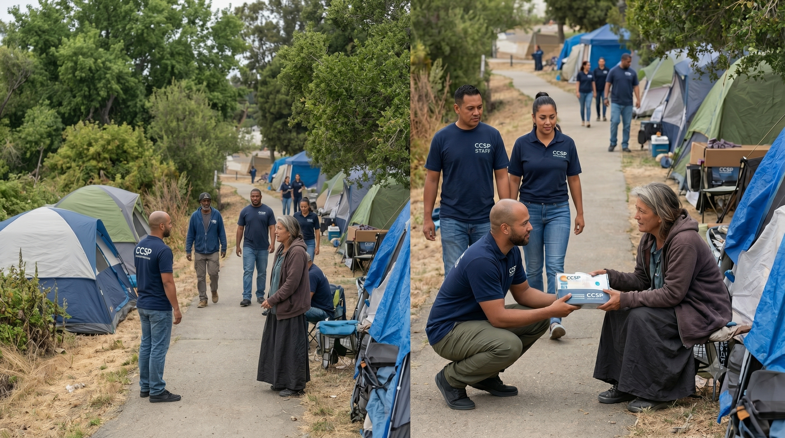
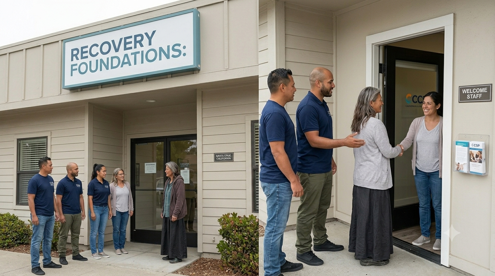
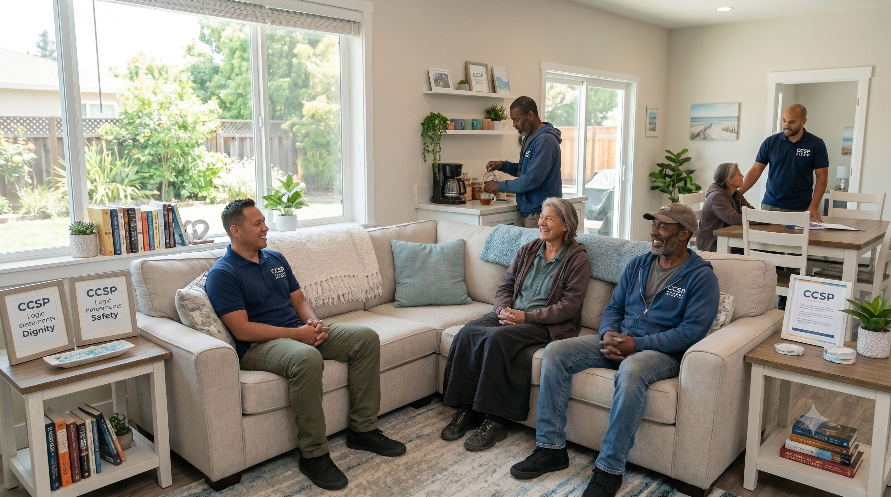
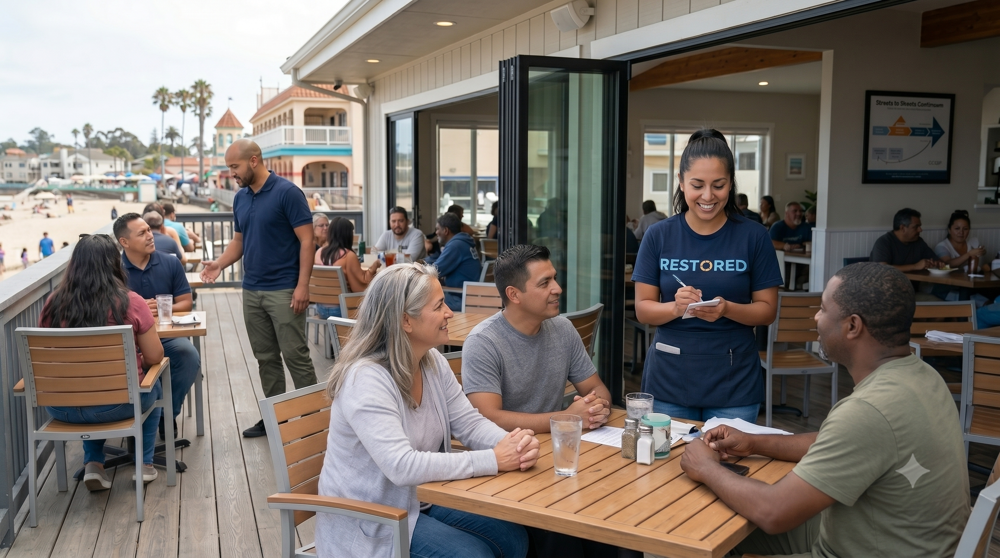

Street Outreach & Hygiene
Building direct, trust-based relationships on the streets. Our team meets unhoused community members right where they are, handing out essential resources, providing a human connection, and offering immediate, baseline support.
.jpg)
Mobile Service Units
Restoring fundamental dignity through our customized mobile hygiene systems. By deploying specialized truck and trailer setups directly to high-need areas, we provide safe access to warm showers, fresh clothing changes, and critical resource navigation.

Detox & Recovery Referrals
Acting as an intentional, warm bridge to licensed external clinical providers. We guide participants smoothly from initial stabilization into medical detox and inpatient treatment facilities, standing by them as they complete their critical clinical milestones.

Sober Living Environments
Transitioning individuals into supportive, structured housing. Our sober living environments champion peer accountability, communal safety covenants, and a healthy routine that helps participants establish an enduring, stable foundation.

Community Reincorporation
The ultimate goal achieved. Through strategic workforce development partners, program graduates are matched with real, sustainable employment opportunities—fully restoring independence and sealing their journey to an entirely clean slate.